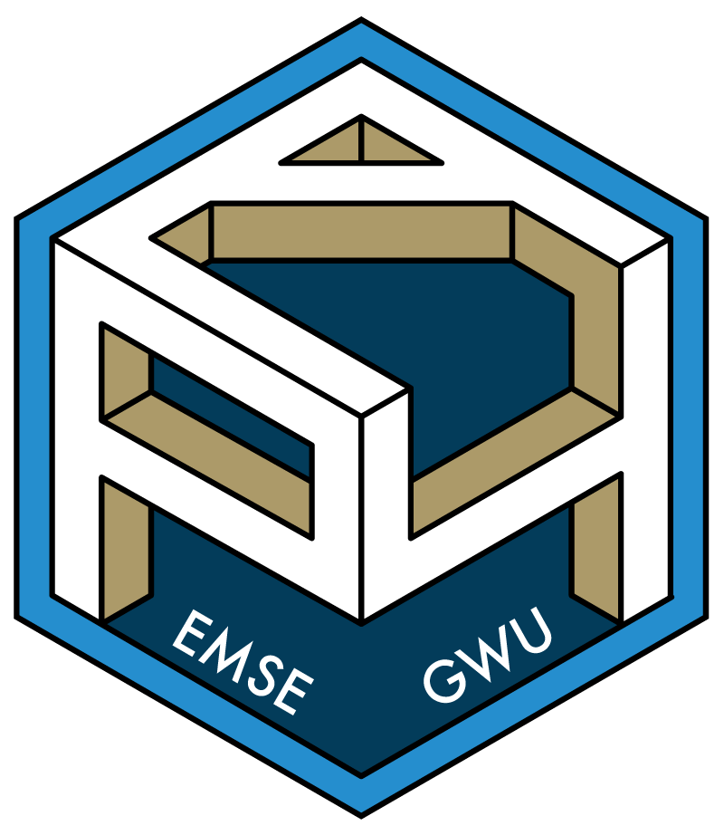

This is the course website for the EMSE undergraduate course “Programming for Analytics” at the George Washington University. This is the first part of a two-course sequence designed to provide a foundation in programming for data analytics using the R programming language:
Select to view the course site for a particular semester: